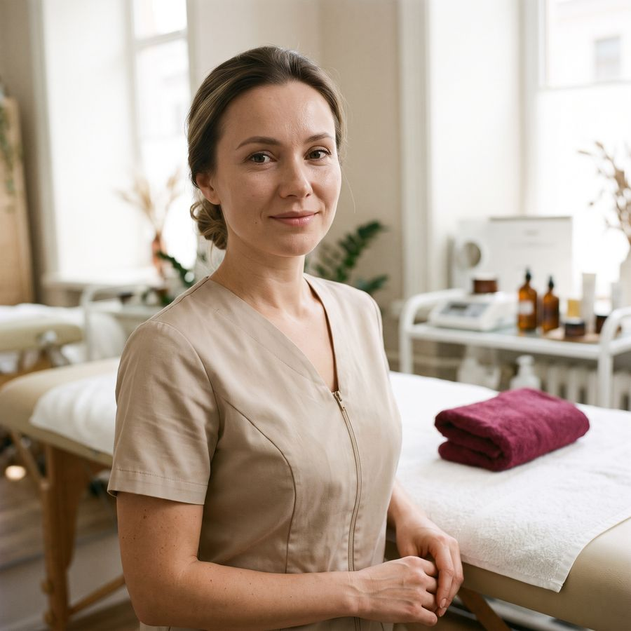
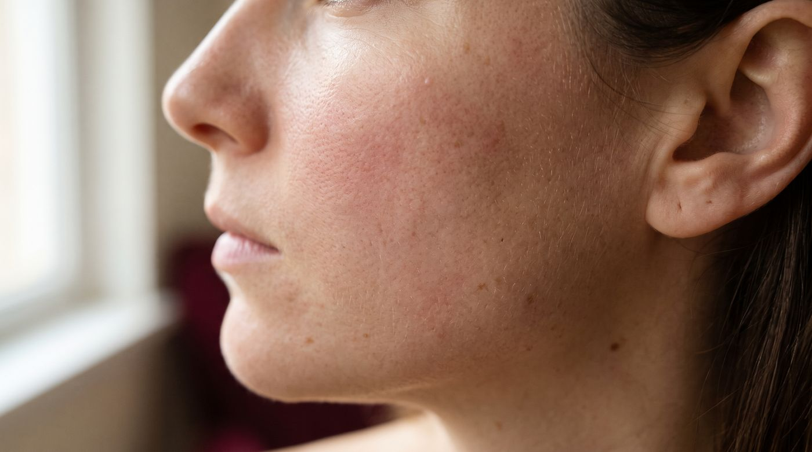
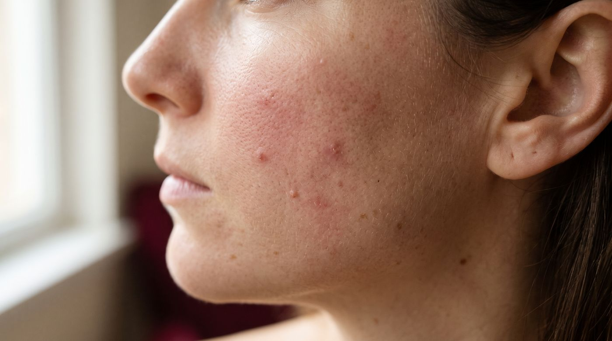

«Первый косметолог, который не пытался продать мне двенадцать банок. Ушла с планом на листке и тремя средствами».
Косметолог Вера Ланская · Москва, Патриаршие
Кожа, которую не хочется прятать
Смотрю кожу, подбираю уход под ваш тип и даю план на три месяца. Запись — минута в Телеграме, без звонков.
Первый визит: консультация и диагностика40 минут · план ухода с собой 2 500 ₽ Хочу на диагностику →Имеются противопоказания, нужна консультация специалиста.
9 лет
практики, из них шесть — в своём кабинете
40 минут
первый визит: смотрим кожу и собираем уход
Без уколов
уход, чистки и пилинги — то, что делаю руками и аппаратом
Процедуры и цены
Цена — за всю процедуру, без доплат за «сыворотку получше». Нажмите на строку — расскажу, как проходит и сколько заживает.

Обо мне
Вера Ланская
Косметолог-эстетист, девять лет практики. Работаю одна, в своём кабинете на Патриарших: один клиент в час, одноразовые расходники, кушетку перестилаю при вас.
- 2017 диплом косметика-эстетиста, колледж индустрии красоты
- 2021 аппаратная косметология, курс 120 часов
- 2024 химические пилинги, повышение квалификации
Не врач: инъекции и лечение кожных заболеваний не делаю — если увижу, что нужен дерматолог, скажу прямо.
До и после
Потяните ползунок. Под каждым фото — что делали и за сколько визитов.


Комбинированная чистка + 3 пилинга, 6 недель. Демо-фото: на сайте мастера будут снимки клиентов с их согласия.
Отзывы
Демо-отзывы: на сайте заказчика — реальные, со ссылкой на Яндекс Карты.
«После чистки краснота держалась до вечера, как и предупредили. Утром кожа ровная, поры заметно меньше».
«Пилинги помогли, но эффект пришёл только к третьему визиту — не ждите чуда с первого раза. Записалась на курс заново».
Частые вопросы
Своего вопроса не нашли — напишите, отвечу в течение часа.
Можно прийти, если сейчас воспаления?
Да, но чистку в этот день не делаю. Посмотрю кожу, соберу уход на две недели и запишу на процедуру, когда воспаление уйдёт.
Сколько держится результат чистки?
Обычно 4-6 недель. Дольше — если дома держать уход из плана, его выдаю с собой.
Пилинг летом — можно?
Поверхностный — да, с кремом SPF 50 каждый день. Срединные пилинги делаю с октября по март.
Как отменить или перенести запись?
Напишите в Телеграм или MAX за сутки — перенесу без вопросов. Позже — предоплата не возвращается.
Как оплатить?
Картой или СБП после процедуры. Предоплата 500 ₽ — только для визитов в субботу.
Запишитесь за минуту
Напишите, что беспокоит, — отвечу в течение часа с 9 до 21 и предложу время. Звонить не нужно, но можно.
- Москва, Малый Козихинский пер., 8 · 3 мин от м. Маяковская
- Вт-Сб 10:00-20:00
- +7 000 000-00-00 — если удобнее голосом